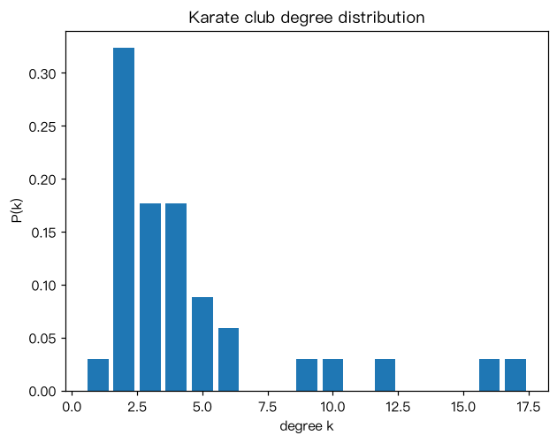
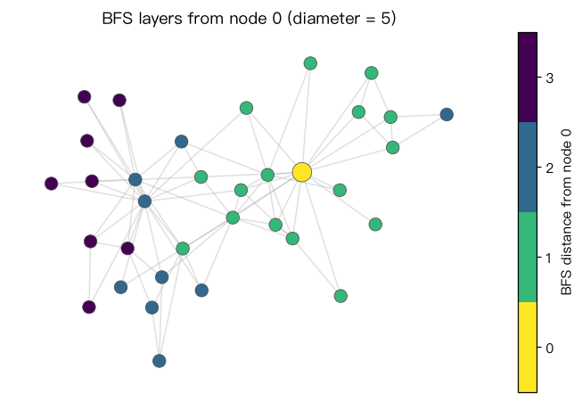
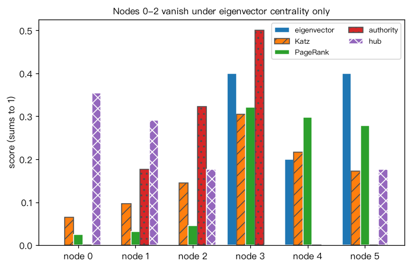
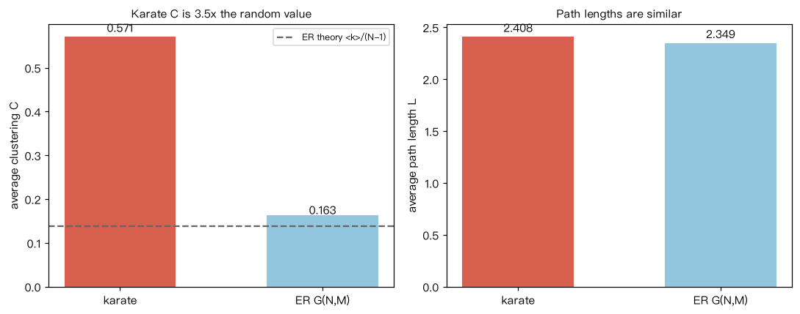

网络结构指标与随机图
用度、路径、聚集、效率与中心性刻画网络结构，并以 Erdős–Rényi 随机图为零模型判断真实网络的特殊之处。
把一个系统写成图和邻接矩阵（见复杂系统与网络的数学表示）之后，下一步是描述它的结构。一张有上万个节点的网络画出来只是一团“毛线球”，肉眼看不出任何规律，需要定量的结构指标。本专题按“从局部到全局、从无权到加权、从描述到比较”的顺序整理这些指标：
- 三把基本尺子：度分布（每个节点有多少连接、这些连接如何分配）、路径长度（信息或影响要走多远）、聚集系数（邻居之间是否彼此相连），以及与之相关的连通分支；
- 效率：用距离的倒数刻画整合与局部容错，适用于不连通网络；
- 加权网络：强度、加权聚集系数与加权路径，以及“权重如何转换为长度”这一常被忽视的步骤；
- 中心性家族：度、接近、介数、特征向量、Katz、PageRank、HITS 与 k 核，各自隐含不同的“流动”假设；
- 随机网络：Erdős–Rényi（ER）模型的度分布、最大与最小度、四个演化区间与临界现象、平均距离的对数律。
有了尺子还需要一个参照物，否则无法判断一个数值是“大”还是“小”。ER 随机网络就是最基本的参照物，即零模型。把真实网络与 ER 网络比较，会得到两个“反常”：聚集系数远高于随机预期，度分布的尾巴远比泊松分布长。这两个反常正是小世界与无标度网络模型要解释的对象；介于全局与局部之间的社团尺度在社团结构与社区发现中讨论；度–度相关（同配性）与富人俱乐部等高阶统计在度相关性与网络结构的高阶统计中讨论。
本专题的定义与 Barabási《Network Science》第 2–3 章、Newman《Networks》“Measures and metrics”一章以及 Brain Connectivity Toolbox（BCT）的指标文档保持一致；符号约定： 为节点数， 为边数， 为邻接矩阵。有向网络中 表示存在边 。
Contents知识页面
VIDEO讲解视频
文字稿
我们先看两张蛋白质网络，左边一张，右边一张。它们的节点一样多，边也一样多。 每个节点平均连着几条边，叫平均度。所以这两张网络的平均度完全相同，都是三点九。 如果只报告平均度，它们看上去就是同一种网络。 现在，把每个节点按连接数放大。差别马上就出来了：右边藏着几个连接极多的节点，叫枢纽。 敲掉右边最大的那个枢纽，一下子断掉三十四个相互作用。 而左边，不管敲掉谁，最多只断九个。 所以一个数字远远不够。要描述网络的结构，需要几把不同的尺子。 这一期分三部分来讲。 第一部分，三把基本的尺子：度分布、距离和聚集系数。 第二部分，中心性，也就是怎样衡量一个节点重不重要。 第三部分，随机图：判断一张真实网络特殊在哪里的参照尺。 先看第一部分。第一把尺子是度分布。度，就是一个节点的连接数。 度分布，是随机挑一个节点，它的度等于某个值的概率。 下面两张图，横轴是度，纵轴是概率。左边是网络甲，右边是网络乙，也就是开头那两张网络。 网络甲的度，集中在平均值附近，分布只有一个峰。 网络乙不一样。大多数节点只有两三个连接，分布却拖着一条长长的尾巴，这叫重尾分布。 一个简单的判断办法，是看最大度是平均度的几倍。 网络甲是两倍多，网络乙将近九倍。 第二把尺子是距离。两个节点之间的距离，就是从一个走到另一个，最少要走几步。 算距离的办法叫广度优先搜索：从这个金色的节点出发，像水波一样，一层一层往外扩。 同一种颜色的节点，离出发点的距离相同。把所有节点对的距离取平均，就是平均路径长度。这张网络大约是五步。 再看一个更一般的规律。在随机网络里，从一个节点出发—— 第一步能到达平均度那么多个节点，第二步是平均度的平方，第三步是立方。增长得非常快。 所以平均距离，大约等于节点数的对数，除以平均度的对数。 公式里，分子是节点总数取对数，分母是平均度取对数。对数增长得很慢。 所以，就算有几十亿个节点，平均距离也只有几步到十几步。 第三把尺子叫聚集系数。它衡量一个节点的两个邻居之间是不是也相连，就像你的两个朋友，是不是也是朋友。 这个金色节点有四个邻居。四个邻居之间，最多可以连六条边，就是这些虚线。 实际只连了三条，就是绿色的这三条。 聚集系数，等于实际的边数，除以最多可能的边数。这里是三除以六，等于零点五。 聚集系数高，说明网络里三角形多，节点喜欢抱成小团。 下面进入第二部分：中心性，也就是衡量节点重要程度的指标。重要，有好几种不同的含义。 最简单的是度中心性，只看直接的邻居有多少。按这个标准，最重要的是两个团里，连接最多的这两个节点。 但是看中间这个金色的节点。它只有两条边，却是两个团之间唯一的通道。 两团之间的最短路径，全都要经过它。经过一个节点的最短路径越多，它的介数中心性就越高。 介数高的节点，就是网络的瓶颈。 有研究发现，在有向的转录调控网络里，这种瓶颈节点，比连接多的枢纽更能预测一个基因是不是必需的。 在脑网络里，节点是脑区。度高的枢纽脑区，常位于楔前叶、后扣带回和额顶联合皮层等区域。 最后是第三部分。有了尺子，还需要一个参照。最常用的参照，是数学家埃尔德什和雷尼研究的随机图。 参照的意思是：如果连接完全随机，这些指标应该是多少。 随机图的规则很简单：每一对节点，都以同样的概率，独立地决定连不连边。 下面四张小图，从左到右，平均度越来越大。平均度小于一时，网络只是一堆零散的碎片。 平均度越过一以后，最大的那一团迅速长大，叫巨连通分支，就是金色的这一团。 平均度超过节点数的对数，这里大约是四，几乎所有节点都连成了一体。 再看随机图的度分布。横轴是度，纵轴是概率。灰色柱子来自一张三千个节点的随机图，金色曲线是泊松分布。 它紧紧围在平均值附近，几乎不会出现枢纽。 现在拿一张真实网络，和同样规模的随机图比一比。这是一个约一亿八千万用户的即时通信网络。 上面两根条，是平均路径长度。真实网络是六点六，随机图大约是七，几乎一样。 下面两根条，是聚集系数，用的是对数刻度。真实网络是零点一一，随机图只有一亿分之八。 两者相差了大约六个数量级。 度分布也是这样：真实网络有重尾和枢纽，随机图没有。 所以随机图是一个零模型，也就是不带任何特殊结构的参照。真实网络偏离它的地方，才是值得解释的结构。 好，我们来总结一下。 第一，只看平均度不够，要看完整的度分布。 第二，距离、聚集系数和中心性，从不同角度刻画网络，各自回答不同的问题。 第三，任何指标都要和零模型比，偏离随机的部分才有意义。 这个专题的知识页面里，有画面上的这个交互演示。拖动连边概率，就能看到巨连通分支怎样突然出现。
INTERACTIVE交互可视化
CODE计算实现
15 个完整可运行的 Python 示例，每个都给出代码、输出图和解读；可在浏览器中直接运行，或下载 Jupyter Notebook · Python 脚本 · 在 JupyterLite 中打开 ↗。

度、平均度、密度与度分布
用广度优先搜索（BFS）求最短路径距离 局部聚集系数、平均聚集系数与传递性
局部聚集系数、平均聚集系数与传递性 全局效率与局部效率
全局效率与局部效率 加权网络的强度、加权聚集系数与加权最短路径
加权网络的强度、加权聚集系数与加权最短路径 中心性家族在同一网络上的比较
中心性家族在同一网络上的比较 用 Brandes 算法手工计算介数中心性
用 Brandes 算法手工计算介数中心性
特征向量、Katz、PageRank 与 HITS 的幂迭代实现 k 核分解（逐层剥离）
k 核分解（逐层剥离） ER 网络的最大度与最小度（自然截断）
ER 网络的最大度与最小度（自然截断） ER 随机网络中巨连通分支的涌现
ER 随机网络中巨连通分支的涌现 ER 网络演化的四个区间
ER 网络演化的四个区间 临界点处的分支大小分布 p_s ~ s^{-3/2}
临界点处的分支大小分布 p_s ~ s^{-3/2} ER 网络平均距离随 N 的对数增长
ER 网络平均距离随 N 的对数增长
真实网络与同规模 ER 网络的比较Practice自测、练习与案例
Papers论文精读
论随机图的演化
On the evolution of random graphs
Erdős P, Rényi A
让随机图的边数逐渐增加，系统刻画各种结构在何时“突然”出现，发现巨连通分支在平均度为 1 处涌现。
一组基于“介于性”的中心性度量
A set of measures of centrality based on betweenness
Freeman LC
用“一个节点落在多少对节点的最短路径上”来定义中心性，给出节点介数、标准化介数和整个网络的中心化指标。
“小世界”网络的集体动力学
Collective dynamics of 'small-world' networks
Watts DJ, Strogatz SH
用随机重连在规则网格与随机图间插值，发现少量捷径即可使网络兼具高聚类与短路径，并在真实网络中验证。
复杂网络的结构与功能
The structure and function of complex networks
Newman MEJ
网络科学第一个十年的系统综述：真实网络的统计特征、随机图与增长模型、网络上的渗流与传播。
识别复杂网络中的关键传播者
Identification of influential spreaders in complex networks
Kitsak M, Gallos LK, Havlin S, Liljeros F, Muchnik L, Stanley HE, et al.
发现单个传播源的影响力更取决于它在 k-壳分解中所处的层次，而不是度或介数；多个传播源还需彼此分散。
共同接收者中的突触组织预测输入神经元之间的连接
Synaptic organization in shared receivers predicts connectivity between input neurons
Zhang X
在两个成年果蝇连接组中，相连输入源的突触在共同接收神经元上靠得更近，这种空间信息可帮助预测未见过的输入神经元之间的连接。
References核心文献
Erdős & Rényi 1960：On the evolution of random graphs
- 出处：Publications of the Mathematical Institute of the Hungarian Academy of Sciences 5: 17–61。（原刊无 DOI，可在网上找到公开的重排版）论文精读：Erdős 1960
- 背景：图论此前主要研究具体的、确定的图。Erdős 与 Rényi 系统研究了“随机地加边，图会如何演化”。
- 核心发现：随着边数增加，图的许多性质（是否含有某种子图、是否存在大连通分支、是否连通）会在某个临界边数附近突然出现，即阈值现象；巨连通分支在平均度为 1 时出现。
- 阅读提示：这是一篇纯数学论文，不必逐条读证明。重点读引言和关于“巨分支”出现的部分，体会“相变”这一思想，网络上的传播与免疫（传播阈值）和网络鲁棒性、渗流与级联失效都会再次用到它。
- 思考题：为什么巨连通分支恰好在平均度等于 1 时出现？试用“沿着边向外探索，每一步平均能找到几个新节点”的思路解释。
Freeman 1977：A set of measures of centrality based on betweenness
- 出处：Sociometry 40: 35–41。DOI：10.2307/3033543。论文精读：Freeman 1977
- 背景：社会网络分析中，“中心”的直觉含义有多种，此前的指标多基于度或距离。
- 核心内容：提出以“处在多少对节点的最短路径之间”度量节点对交流的控制力，即介数中心性，并给出网络层面的中心化指标。次年的 Freeman（1978, Social Networks）进一步把度、接近、介数三类中心性放在统一框架下比较。
- 阅读提示：注意介数隐含的假设——交流沿最短路径进行、各条最短路径等可能。思考它在 PPI、调控网络和功能连接网络中是否成立。
Rubinov & Sporns 2010：Complex network measures of brain connectivity: uses and interpretations
- 出处：NeuroImage 52: 1059–1069。DOI：10.1016/j.neuroimage.2009.10.003。论文精读：Rubinov 2010
- 背景：图论指标在脑影像研究中快速普及，但不同研究使用的定义、计算方法和解释各不相同。
- 核心内容：把脑网络指标分为功能分离（聚集系数、局部效率、模块度）、功能整合（路径长度、全局效率）、中心性与枢纽、网络韧性等几类，给出二值/加权、有向/无向情形下的统一定义，并讨论各指标的神经生物学解释与局限。
- 阅读提示：文末附有各指标数学定义的汇总，可作为“速查表”；特别留意作者对“路径长度是否真正反映信息传递”的谨慎态度。Rubinov 与 Sporns 提供的 Brain Connectivity Toolbox 是脑网络分析的常用工具。
- 思考题：在功能连接网络中，两个脑区之间的“最短路径”有没有明确的生理含义？如果没有，平均路径长度还能解释为“整合能力”吗？
其他引用文献
- Achard S, Salvador R, Whitcher B, Suckling J, Bullmore E (2006). A resilient, low-frequency, small-world human brain functional network with highly connected association cortical hubs. Journal of Neuroscience 26: 63–72. DOI：10.1523/JNEUROSCI.3874-05.2006
- Barrat A, Barthélemy M, Pastor-Satorras R, Vespignani A (2004). The architecture of complex weighted networks. PNAS 101: 3747–3752. DOI：10.1073/pnas.0400087101
- Batagelj V, Zaversnik M (2003). An O(m) algorithm for cores decomposition of networks. arXiv:cs/0310049
- Boldi P, Vigna S (2014). Axioms for centrality. Internet Mathematics 10: 222–262. DOI：10.1080/15427951.2013.865686
- Bonacich P (1972). Factoring and weighting approaches to status scores and clique identification. Journal of Mathematical Sociology 2: 113–120. DOI：10.1080/0022250X.1972.9989806
- Bonacich P (1987). Power and centrality: a family of measures. American Journal of Sociology 92: 1170–1182. DOI：10.1086/228631
- Borgatti SP (2005). Centrality and network flow. Social Networks 27: 55–71. DOI：10.1016/j.socnet.2004.11.008
- Brandes U (2001). A faster algorithm for betweenness centrality. Journal of Mathematical Sociology 25: 163–177. DOI：10.1080/0022250X.2001.9990249
- Bringmann LF, Elmer T, Epskamp S, et al. (2019). What do centrality measures measure in psychological networks? Journal of Abnormal Psychology 128: 892–903. DOI：10.1037/abn0000446
- Brin S, Page L (1998). The anatomy of a large-scale hypertextual Web search engine. Computer Networks and ISDN Systems 30: 107–117. DOI：10.1016/S0169-7552(98)00110-X
- Dorogovtsev SN, Goltsev AV, Mendes JFF (2006). k-core organization of complex networks. Physical Review Letters 96: 040601. DOI：10.1103/PhysRevLett.96.040601
- Estrada E, Rodríguez-Velázquez JA (2005). Subgraph centrality in complex networks. Physical Review E 71: 056103. DOI：10.1103/PhysRevE.71.056103
- Freeman LC (1978). Centrality in social networks: conceptual clarification. Social Networks 1: 215–239. DOI：10.1016/0378-8733(78)90021-7
- Fronczak A, Fronczak P, Hołyst JA (2004). Average path length in random networks. Physical Review E 70: 056110. DOI：10.1103/PhysRevE.70.056110
- Katz L (1953). A new status index derived from sociometric analysis. Psychometrika 18: 39–43. DOI：10.1007/BF02289026
- Kitsak M, Gallos LK, Havlin S, et al. (2010). Identification of influential spreaders in complex networks. Nature Physics 6: 888–893. DOI：10.1038/nphys1746
- Kleinberg JM (1999). Authoritative sources in a hyperlinked environment. Journal of the ACM 46: 604–632. DOI：10.1145/324133.324140
- Latora V, Marchiori M (2001). Efficient behavior of small-world networks. Physical Review Letters 87: 198701. DOI：10.1103/PhysRevLett.87.198701
- Martin T, Zhang X, Newman MEJ (2014). Localization and centrality in networks. Physical Review E 90: 052808. DOI：10.1103/PhysRevE.90.052808
- Morrison JL, Breitling R, Higham DJ, Gilbert DR (2005). GeneRank: using search engine technology for the analysis of microarray experiments. BMC Bioinformatics 6: 233. DOI：10.1186/1471-2105-6-233
- Newman MEJ, Strogatz SH, Watts DJ (2001). Random graphs with arbitrary degree distributions and their applications. Physical Review E 64: 026118. DOI：10.1103/PhysRevE.64.026118
- Onnela JP, Saramäki J, Kertész J, Kaski K (2005). Intensity and coherence of motifs in weighted complex networks. Physical Review E 71: 065103. DOI：10.1103/PhysRevE.71.065103
- Opsahl T, Agneessens F, Skvoretz J (2010). Node centrality in weighted networks: generalizing degree and shortest paths. Social Networks 32: 245–251. DOI：10.1016/j.socnet.2010.03.006
- Pittel B, Spencer J, Wormald N (1996). Sudden emergence of a giant k-core in a random graph. Journal of Combinatorial Theory, Series B 67: 111–151. DOI：10.1006/jctb.1996.0036
- Seidman SB (1983). Network structure and minimum degree. Social Networks 5: 269–287. DOI：10.1016/0378-8733(83)90028-X
- van den Heuvel MP, Sporns O (2013). Network hubs in the human brain. Trends in Cognitive Sciences 17: 683–696. DOI：10.1016/j.tics.2013.09.012
- Wuchty S, Almaas E (2005). Peeling the yeast protein network. Proteomics 5: 444–449. DOI：10.1002/pmic.200400962
- Yu H, Kim PM, Sprecher E, Trifonov V, Gerstein M (2007). The importance of bottlenecks in protein networks: correlation with gene essentiality and expression dynamics. PLoS Computational Biology 3: e59. DOI：10.1371/journal.pcbi.0030059
Data & tools相关数据与软件
Further延伸资源
| 类型 | 资源 | 说明 |
|---|---|---|
| 教材 | Barabási, Network Science, Ch. 2 Graph Theory（networksciencebook.com/chapter/2） | 度、邻接矩阵、加权与二分网络、路径与距离、BFS、连通性、聚集系数；进阶专题 2.A 讨论全局聚集系数 |
| 教材 | Barabási, Network Science, Ch. 3 Random Networks（networksciencebook.com/chapter/3） | 随机网络模型、泊松度分布、演化的四个区间、小世界、聚集系数；进阶专题 3.A–3.G 给出泊松推导、最大最小度、巨分支、分支大小、完全连通区、相变与小世界修正 |
| 教材 | Newman, Networks（第 2 版, Oxford University Press, 2018），Ch. 7 Measures and metrics；随机图各章 | 中心性家族（度、特征向量、Katz、PageRank、枢纽与权威、接近、介数）、群组与 k 核、传递性与相似性的系统处理 |
| 工具 | Brain Connectivity Toolbox（sites.google.com/site/bctnet） | 二值/加权、有向/无向的聚集、效率、路径、中心性、核结构函数清单，含权重–长度转换的说明；Python 版为 bctpy |
| 软件 | NetworkX 算法文档（networkx.org） | 查阅
clustering、transitivity、global_efficiency、betweenness_centrality、pagerank、core_number
等函数的精确定义与约定 |
| 公开课 | Stanford CS224W（主页） | 英文公开课；“网络性质与随机图模型”部分与本专题对应，视频在 YouTube（需境外网络） |
| 综述 | Newman 2003, “The structure and function of complex networks”, SIAM Review（DOI） | 网络指标与模型的经典长综述，第 III 节（真实网络的性质）与本专题对应；论文精读见 Newman 2003 |
| 脑网络 | Rubinov & Sporns 2010, NeuroImage（DOI） | 脑网络指标的定义与解释，可作为脑网络分析的工具书 |
| 经典数据 | Zachary 1977, 空手道俱乐部网络（DOI） | 本专题代码示例所用数据的原始论文；NetworkX 内置为
karate_club_graph() |
Open questions开放问题
- 你的研究数据如果构建成网络（例如基因共表达网络或脑功能网络），你认为它的度分布更可能是均匀型还是重尾型？如果是重尾型，度最高的那些节点在生物学上可能是什么？你会如何排除“研究偏倚”等技术性原因？
- 本专题把 ER 随机网络作为零模型。对于你的数据，ER 网络是否是一个“公平”的比较对象？你认为还应该保持哪些性质不变（例如度序列、空间距离、模块结构），比较才有意义？
- 在你的网络里，“重要节点”应该按哪种流动模型来定义？如果度、介数和 PageRank 给出的前十名不一致，你会怎样决定报告哪一个，又如何检验它的生物学意义？
- 一个功能连接网络的平均度为 10、节点数为 300。按 ER 理论它处于哪个演化区间？如果实际网络有若干孤立脑区，这更可能反映拓扑规律，还是阈值选择与测量噪声？